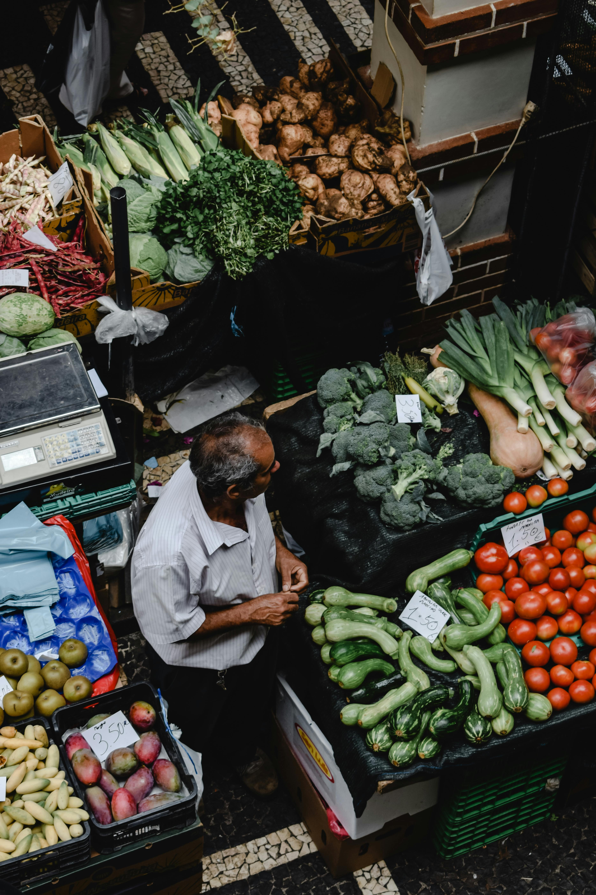

Our website, 'Charlottesville Market Connect', is a student-led sustainability solution designed to foster community health and environmental responsibility. Recognizing the need for easy access to local produce, we've created a platform that links Charlottesville residents directly to nearby farmers' markets. This initiative not only supports local agriculture but also reduces the carbon footprint associated with food transport. We believe that by simplifying the path to sustainably sourced food, we empower our community to make eco-friendly choices.
